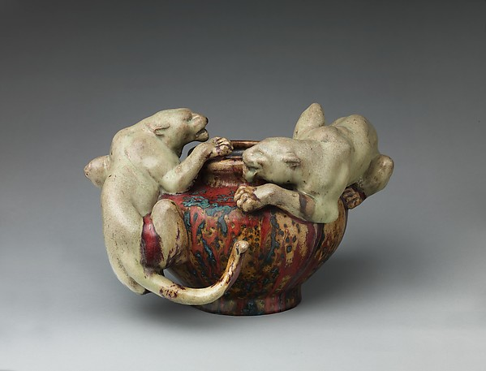
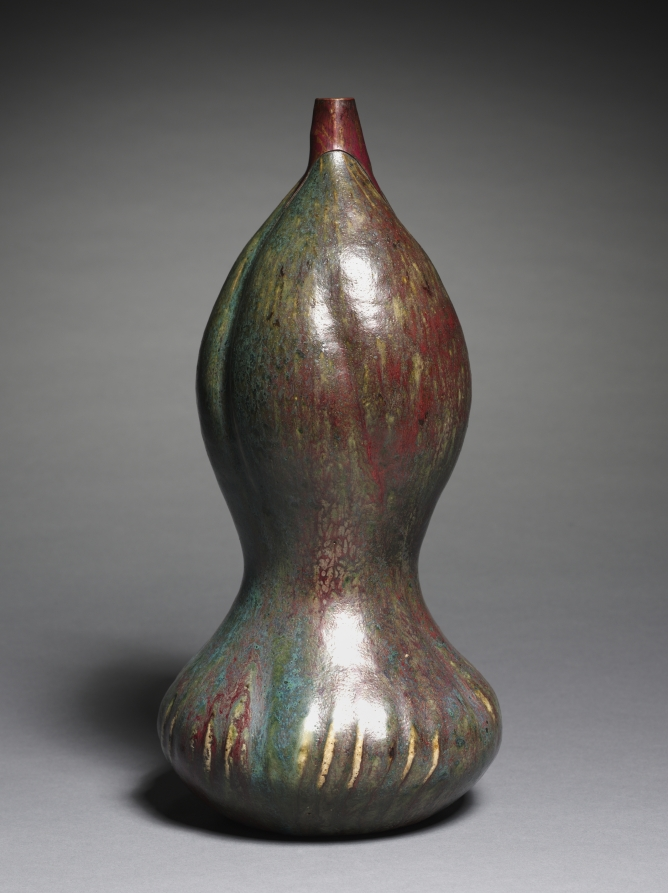
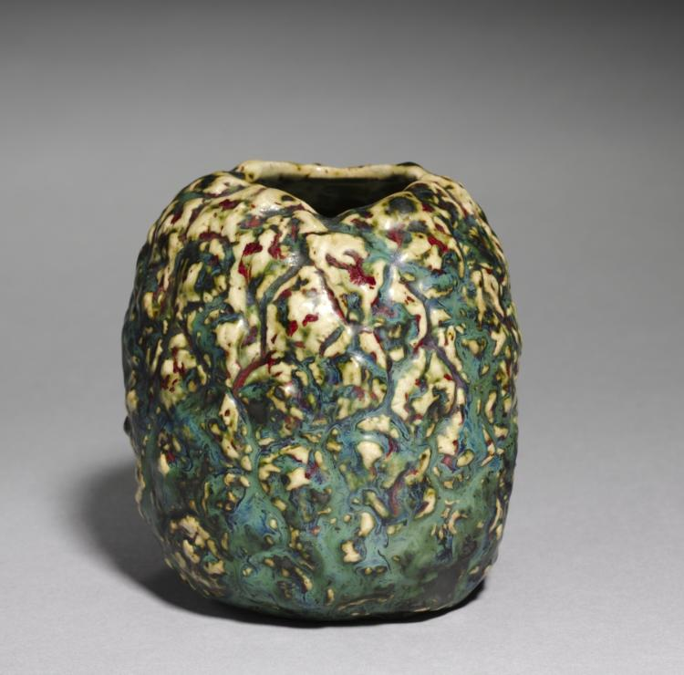
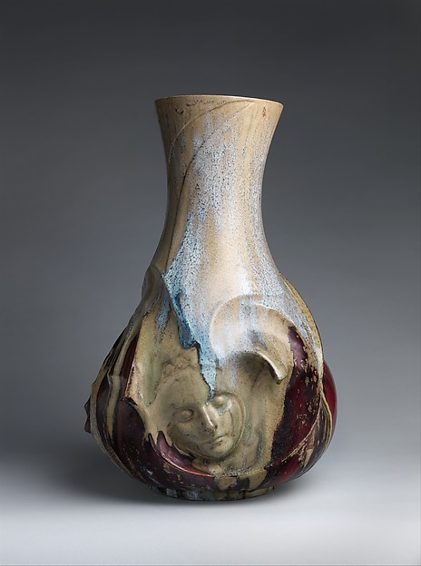
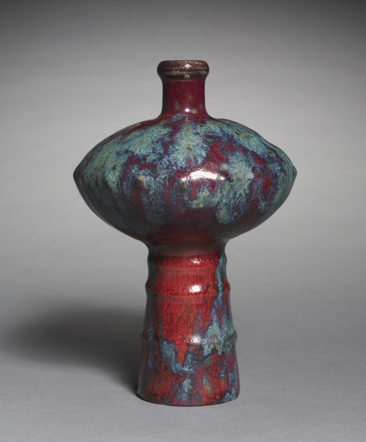
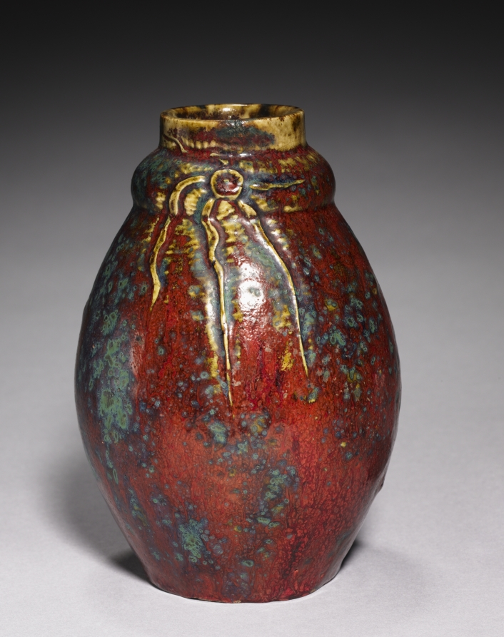

Pierre-Adrien
Dalpayrat.
Colour across form.
Pierre-Adrien Dalpayrat (1844–1910) used stoneware vessels to explore both sculptural form and variations in glaze. These six works bring together a bowl, a collaborative figurative vase and four smaller vessels. The sequence moves between broad and narrow silhouettes, allowing the surface of each piece to hold the reader’s attention. In Vase with face, the sleeping figure is credited to Dalpayrat’s collaboration with Alphonse Voisin-Delacroix. Both makers remain in the caption.
Independent editorial exercise using museum collection records and open-access images. Prepared as a work sample for the Ceramics Now editorial role.

Bowl with two panthers 1894–95
Pierre-Adrien Dalpayrat
Stoneware · 24.3 × 35.9 × 29.5 cm
The Metropolitan Museum of Art · 2013.482
Collection credit: Robert A. Ellison Jr. Collection, Purchase, Acquisitions Fund; Louis V. Bell, Harris Brisbane Dick, Fletcher, and Rogers Funds and Joseph Pulitzer Bequest; and 2011 Benefit Fund, 2013

Vase c. 1890
Pierre-Adrien Dalpayrat
Stoneware · 33.9 × 16.4 cm (overall)
The Cleveland Museum of Art · 1979.9
Collection credit: Andrew R. and Martha Holden Jennings Fund

Vase c. 1900
Pierre-Adrien Dalpayrat
Stoneware · 10.5 cm (overall); diameter 9.6 cm
The Cleveland Museum of Art · 1997.279
Collection credit: Gift of Henry H. Hawley

Vase with face 1892–93
Pierre-Adrien Dalpayrat and Alphonse Voisin-Delacroix
Stoneware · 64.8 × 42.9 × 40.6 cm
The Metropolitan Museum of Art · 2013.481
Collection credit: Robert A. Ellison Jr. Collection, Purchase, Acquisitions Fund; Louis V. Bell, Harris Brisbane Dick, Fletcher, and Rogers Funds and Joseph Pulitzer Bequest; and 2011 Benefit Fund, 2013

Vase c. 1900
Pierre-Adrien Dalpayrat
Stoneware · 19.7 cm (overall)
The Cleveland Museum of Art · 1975.119
Collection credit: Gift of Mrs. S. Prentiss Baldwin, by exchange

Vase c. 1900
Pierre-Adrien Dalpayrat
Stoneware · 17.5 cm (overall); diameter 12.3 cm
The Cleveland Museum of Art · 1997.286
Collection credit: Gift of Henry H. Hawley
From source to publication.
A short copy-edit exercise, a consistent caption set, and a six-image selection that can move from the page to social. The draft below was written for this exercise; it is not an artist’s statement or a quotation.
Pierre-Adrien Dalpayrat (1844-1910) used stoneware vessels to explore sculptural form and also variations in glaze. There are six works here, a bowl, one collaborative figurative vase, and four smaller vessels. The sequence move between broad and narrow silhouettes, this allows the surface of each piece to hold the readers attention. Vase with face is a collaboration with Alphonse Voisin-Delacroix, both makers needs to be credited.
Pierre-Adrien Dalpayrat (1844–1910) used stoneware vessels to explore both sculptural form and variations in glaze. These six works bring together a bowl, a collaborative figurative vase and four smaller vessels. The sequence moves between broad and narrow silhouettes, allowing the surface of each piece to hold the reader’s attention. In Vase with face, the sleeping figure is credited to Dalpayrat’s collaboration with Alphonse Voisin-Delacroix. Both makers remain in the caption.
- Names stay attached to the work.The Met’s record lists two makers for Vase with face. Both are credited here.
- Dimensions keep their meaning.Overall dimensions and diameter remain distinct. Approximate dates retain “c.”; a missing space is normalized.
- Collection and image credits remain separate.The acquisition credit is preserved. The museum is identified as the image source; no photographer’s name is invented.
- The sequence changes pace.A broad sculptural opener alternates with vessels of different proportions. Each image shows the complete object.
Sources, image selection and WordPress handoff
Images 1–6 form the proposed six-image social sequence. The ZIP includes the images, numbered caption sheet, source records and WordPress core image-block markup. Museum records are linked beside each object. Images 1 and 4 are public-domain Open Access images from The Metropolitan Museum of Art; the other four are designated CC0 by The Cleveland Museum of Art. No museum or artist endorsement is implied.
WordPress markup preserves the same sequence and credits. An editor can paste it into a draft’s code view, switch to the visual editor, and work with individual image and caption blocks. Original image files are included for import into the publication’s own media library.